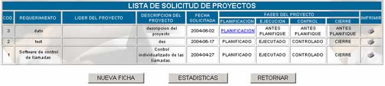
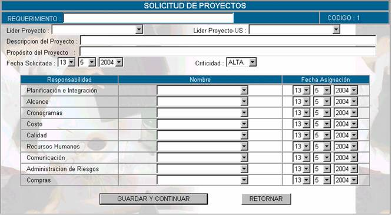
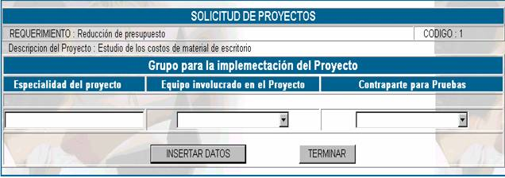
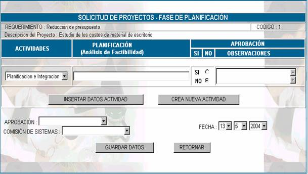
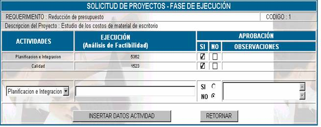
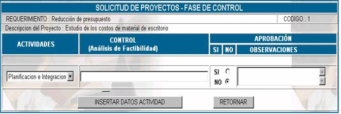
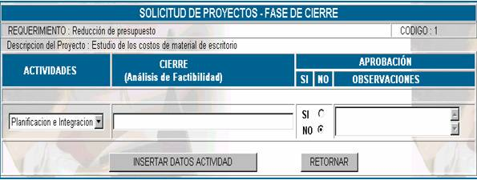

SOLICITUD DE PROYECTOS
La solicitud de proyectos, se realiza para
proponer una solución a una necesidad empresarial presentada, identificando de
manera general el producto esperado, ésta puede ser realizada por el comité de
sistemas como resultado de un análisis empresarial o de una gerencia o unidad.
Esta opción, muestra como pantalla principal
la lista de solicitud proyectos

Cod;
especifica el código de solicitud de proyecto, este código es correlativo así
que no se cambiar
Requerimiento; especifica la necesidad a la que se quiere dar
solución con el proyecto, especificada en el momento de realizar la solicitud
del proyecto
Líder del proyecto; el líder del proyecto de las áreas usuarias
Descripción del proyecto; especifica el nombre del proyecto
Fecha solicitada; especifica la fecha de inicio del proyecto
Fase del proyecto; especifica en qué fase se encuentra el proyecto, si
es que usted se encuentra en la primera fase, le aparecerá como opción de
escoger Planificación, si es que usted
ya registró los datos de la planificación del proyecto y ésta ya se llevó a
cabo entonces aparecerá como opción Ejecución,
si los datos de ejecución ya han sido registrados, entonces aparecerá la opción
Control, si registró los datos de la
etapa de control, entonces aparecerá la opción Cierre.
Nueva ficha; Para añadir una nueva solicitud de proyecto,
presione sobre el botón nueva ficha y le aparecerá la pantalla siguiente.

Requerimiento; en este campo se especifica la necesidad a la cual
se le quiere dar solución con el proyecto.
Líder del proyecto; el líder del proyecto, es aquella persona de la
institución que corresponde a un área usuaria, que se encarga de llevar a cabo
el avance y la revisión de resultados del proyecto y que es designado por el
Comité de Sistemas
Lider del proyecto US; el lider del proyecto US, es aquella persona que corresponda a la Unidad de
Sistemas y que será la encargada de llevar a cabo el proyecto, al igual que el
anterior es designado por el Comité de Sistemas
Descripción del proyecto; se
debe colocar en este campo el nombre del proyecto que se llevará a cabo.
Propósito del proyecto; el objetivo que se desea alcanzar con el proyecto, a
dónde se quiere llegar con la realización del proyecto.
Fecha Solicitada; es la fecha en la cual se pretende iniciar el proyecto.
Criticidad; se
refiere al nivel de criticidad de la necesidad de llevar a cabo el proyecto.
Debido a que la administración de proyectos
está definida bajo una metodología planteada en el manual de procedimientos,
entonces se tiene a continuación la designación de responsables que lleve a
cabo cada una de las actividades.
Planificación e
Integración; usted podrá
designar a una persona la administración de la planificación e integración, el
responsable de esta tarea se constituye en el Director del Proyecto, también se
debe establer la fecha en la cual se realiza la
asignación.
Alcance; el responsable de el alcance deberá establecer el
alcance del producto que surgirá del proyecto, asumiendo todas las etapas que
se llevan a cabo para la administración del alcance, también se debe hacer
referencia a la fecha de asignación.
Cronograma;
el responsable del cronograma y los tiempos deberá administrar la definición de
actividades del proyecto, el orden en el cual se llevarán a cabo, el tiempo que
lleva completar cada una de las actividades, establecer en función de todo esto
un cronograma y llevar el control del cronograma planteado. No olvide registrar
la fecha de asignación de responsable.
Costo; el responsable de la administración de costos, debe
realizar una planificación de los recursos necesarios para llevar a cabo el
proyecto, así como la estimación de costos de cada recurso y la confección de
un presupuesto.
Calidad; el responsable de la administración de la calidad
debe llevar a cabo la planificación de la calidad del proyecto, el
aseguramiento de la calidad del producto que surja del proyecto y el control de
calidad del producto final.
Recursos humanos; el
responsable de la administración de los recursos humanos debe realizar la
planificación de la documentación, los roles y las dependencias funcionales de
los recursos humanos que intervengan en el problema, realizar el reclutamiento
interno y de ser necesario externo, luego organizar los equipos de trabajo.
Comunicación; es
el responsable de determinar quién necesita algún tipo de información y hacer
que dicha llegue a su destino de forma oportuna.
Administración de riesgos;
el responsable deberá identificar los riegos que pueden afectar al proyecto y
documentar sus características, cuantificar los posibles daños de los riesgos.
Compras; el responsable deberá identificar, las compras que
se deben realizar y en qué momento realizar una selección de provedores y establecer los contratos de compras que se
requiera.
Una vez que se hayan llenado estos campos,
entonces presione el botón GUARDAR Y
CONTINUAR y le aparecerá la siguiente pantalla:

Especialidad del proyecto;
En este campo se establece la especialidad del proyecto que puede ser:
Como se puede requerir involucrar en el
grupo de implementación a personas que no estén necesariamente en una de éstas
especialidades, entonces este campo se deja abierto a criterio del
administrador.
Equipo involucrado en el
Proyecto; En este campo se
selecciona el nombre de la persona que pertenezca a la especialidad del
proyecto.
Contraparte de pruebas; se coloca el nombre de la persona que realizará las
pruebas del producto que surja del proyecto y que también tiene la especialidad
del proyecto.
Fases del Proyecto; después de realizar el registro de los responsables
y los datos generales del proyecto, entonces usted se encuentra en posibilidad
de registrar los datos de la planificación, para acceder a esta opción haga click en Planificación y
se mostrará la siguiente pantalla.

Como usted podrá observar al principio se
presenta el requerimiento y la descripción del proyecto registrados
Actividades; Como
se ha mencionado, esta clasificación obedece a la metodología que se hace en el
manual de procedimientos de administración de proyectos, pero usted puede
insertar una nueva actividad de considerarse necesario.
Planificación (análisis de
factibilidad); en función de
los costos y los esfuerzos que se debe poner en la actividad, entonces se estimará
un costo monetario en este campo
Aprobación; La aprobación se hará siempre y cuando el proyecto
sea factible económica y técnicamente.
Observaciones; en este campo usted describirá si existen
observaciones en l aprobación del proyecto.
Luego de llenar estos campos para una
actividad, presione la tecla INSERTAR DATOS ACTIVIDAD, entonces en la
parte superior de la tabla parecerán las actividades registradas que se hayan
recibido.
Aprobación; en este campo se especificará el nombre de la
persona que realiza la aprobación del proyecto, que tiene que pertenecer al
área administrativa.
Comisión de sistemas; en este campo usted escogerá qué persona está
encargada, de la comisión de sistemas, de evaluar la aprobación del proyecto
conjuntamente con el administrador.
Fecha; se registra la fecha de aprobación de la solicitud
del proyecto.
Para guardar todas las actividades del planificación de un proyecto haga click
sobre el botón GUARDAR DATOS, recuerde que tiene que tener más de una
actividad registrada para pasar a la siguiente etapa del proyecto.
Una vez que usted presione el botón RETORNAR
entonces aparecerá la lista de solicitud de proyectos con el vínculo Ejecución activada, si usted hace click en este vínculo aparecerá la siguiente pantalla.

Como se puede observar en la parte superior
de la pantalla aparece remarcado el requerimiento y la descripción del proyecto
Actividades; En
esta opción se despliegan solamente las actividades que usted especificó en la
etapa de planificación y que fueron aprobadas
Ejecución (análisis de
factibilidad) como en la
planificación, este campo se llena en función del costo de los recursos y los
esfuerzos que se tengan que colocar para la ejecución de la actividad y en
función de este costo monetario se toma la decisión de aprobar o no la
ejecución de una actividad.
Aprobación; si
se determina que la ejecución de un proyecto se realiza o no, entonces se llena
este campo.
Observaciones; este campo se llena siempre y cuando se tengan
observaciones dentro de la aprobación de actividades.
No olvide presionar INSERTAR DATOS ACTIVIDAD una vez que se haya llenado los campos
anteriores, no olvide que para pasar a la etapa de Control se debe tener por lo
menos una actividad registrada.
Una vez que usted presione el botón TERMINAR
entonces aparecerá la lista de solicitud de proyectos con el vínculo Control activada, si usted hace click en este vínculo aparecerá la siguiente pantalla.

Como se puede observar en la parte superior
de la pantalla aparece remarcado el requerimiento y la descripción del proyecto
Actividades; En esta opción se despliegan solamente las
actividades que usted especificó en la etapa de ejecución y que fueron
aprobadas
Control (análisis de
factibilidad) como en las etapas
anteriores este campo se llena en función del costo de los recursos y los esfuerzos
que se tengan que colocar para el control de la actividad y en función de este
costo monetario se toma la decisión de aprobar o no el control de una
actividad.
Aprobación; si se determina que el control de un proyecto se
realice o no, entonces se llena este campo.
Observaciones; este campo se llena siempre y cuando se tengan
observaciones dentro de la aprobación de actividades.
No olvide presionar INSERTAR DATOS ACTIVIDAD una vez que se haya llenado los campos
anteriores, no olvide que para pasar a la etapa de Cierre se debe tener por lo
menos una actividad registrada.
Una vez que usted presione el botón TERMINAR
entonces aparecerá la lista de solicitud de proyectos con el vínculo Cierre activada, si usted hace click en este vínculo aparecerá la siguiente pantalla.

Como se puede observar en la parte superior
de la pantalla aparece remarcado el requerimiento y la descripción del proyecto
Actividades; En
esta opción se despliegan solamente las actividades que usted especificó en la
etapa de control y que fueron aprobadas
Cierre (análisis de
factibilidad) como en las etapas
anteriores este campo se llena en función del costo de los recursos y los esfuerzos
que se tengan que colocar para el cierre de la actividad y en función de este
costo monetario se toma la decisión de aprobar o no el cierre de una actividad.
Aprobación; si se determina que el cierre de un proyecto se
realice o no, entonces se llena este campo.
Observaciones; este
campo se llena siempre y cuando se tengan observaciones dentro de la aprobación
de actividades.
No olvide presionar INSERTAR DATOS ACTIVIDAD una vez que se haya llenado los campos
anteriores, no olvide que para terminar el proyecto, se debe tener por lo menos
una actividad registrada.
Imprimir; Para realizar la impresión de la solicitud del
proyecto completa, entonces se debe hacer click en el
vinculo de la lista de solicitud de proyectos y se obtendrá un reporte de todas las etapas
del proyecto.